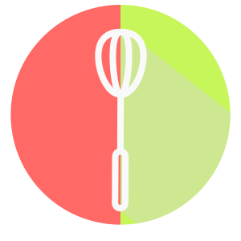

<ion-view view-title="prehome">

    <ion-content scroll="false" ng-controller="UserController">

        <section class="page_prehome">

                

                <h1> SWALTY </h1>

            <a ui-sref="login"> déjà un compte ? </a>
            <button ui-sref="register" class="btn_inscription"> Inscription </button>
            <button class="btn_connexionfb" ng-click="auth.$authWithOAuthPopup('facebook');showPopup()">Connexion Facebook</button>


            <div ng-show="authData">
                <button ng-click="auth.$unauth()">Déconnexion</button>
            </div>

        </section>

    </ion-content>
</ion-view>
